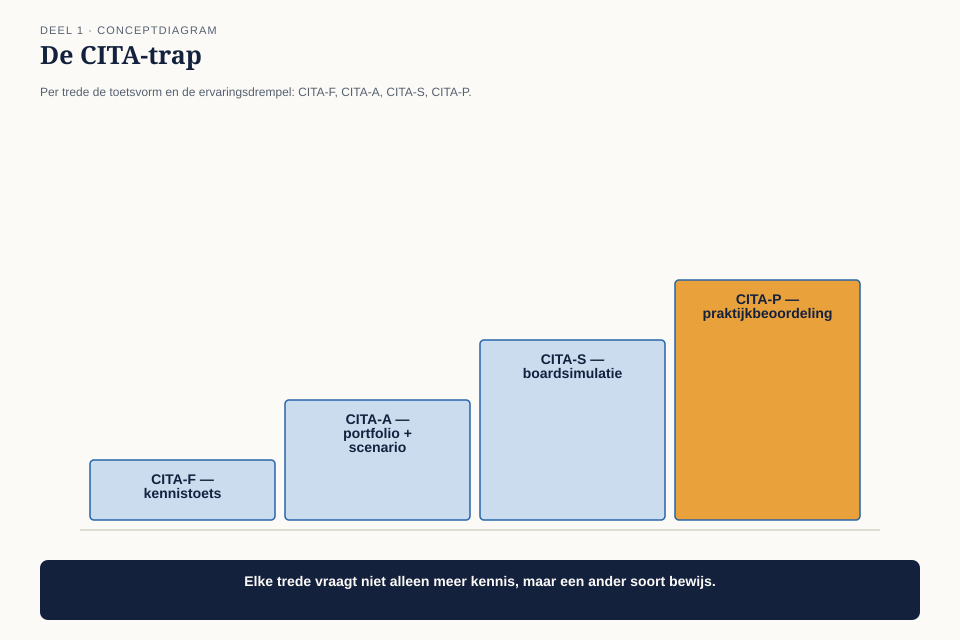

Deel 1 — Het beroep
Niveau 1 — De kern | Deelnemersreader BTABoK-cursus, Ductus
1.1 Waar dit deel over gaat
Dit is het eerste deel van een cursus die ergens anders over gaat dan de meeste architectuurcursussen. TOGAF leert je een proces. ArchiMate leert je een taal. iSAQB leert je een systeem ontwerpen. De BTABoK — de Business Technology Architecture Body of Knowledge van Iasa Global — gaat over de persoon die dat allemaal doet. Over wat die persoon moet kunnen, waaraan hij zijn gezag ontleent, en hoe hij aantoont dat zijn werk iets heeft opgeleverd.
Dat klinkt zachter dan het is. Het is namelijk de vraag waarop architecten in de praktijk vastlopen. Niet op de notatie. Niet op het proces. Op de vraag van de directeur: waarom zit jij hier eigenlijk aan tafel?
Aan het eind van dit deel kun je:
- uitleggen wat de BTABoK is, hoe hij is opgebouwd, en waarin hij verschilt van de frameworks die je waarschijnlijk al kent;
- de vijf kernpijlers en de vijf specialisaties benoemen en toelichten waarom Iasa een specialisatie definieert aan de hand van competenties en niet aan de hand van een functietitel;
- het onderscheid tussen ethiek en principes maken en beide toepassen op een concreet dilemma;
- verantwoorden waarom architectuur volgens Iasa een beroep is en geen rol, en wat dat betekent voor certificering;
- het CITA-certificeringspad beschrijven en bepalen waar jij daarin staat.
Positionering van deze cursus. Deze cursus bereidt je voor op de Iasa-certificeringen en is uitdrukkelijk géén vervanging van het officiële examen- en cursusmateriaal van Iasa. Waar we op de BoK steunen, verwijzen we naar de bronpagina zodat je zelf kunt nalezen.
1.2 Meridiaan Pensioen — de casus
De hele cursus speelt bij Meridiaan Pensioen, een middelgrote Nederlandse pensioenuitvoerder. Wie de EA- of de softwarearchitectuurcursus heeft gevolgd, kent het huis al ↗ — maar je hebt die voorkennis niet nodig.
Nieuw is het perspectief. Waar die cursussen naar een functie of naar een systeem keken, kijken we hier dertig delen lang mee over de schouder van één persoon.
Claudette Vermeer
Claudette is drieëndertig. Ze werkte zeven jaar bij een softwareleverancier, de laatste drie als lead developer van een team van negen. Vier maanden geleden is ze bij Meridiaan begonnen als Solution Architect, een functie die ze aannam omdat ze “meer invloed op het geheel” wilde.
Haar functieprofiel telt drie A4’tjes. Ruim de helft daarvan bestaat uit een opsomming van technologie: kennis van Java, ervaring met Kubernetes, aantoonbare affiniteit met eventgedreven architectuur, bekendheid met ArchiMate, ervaring met een integratieplatform. De overige anderhalve pagina bevat zinsneden als “verbindt business en IT” en “bewaakt de architectuurkaders”.

Vier maanden later staat het er zo voor:
- In de wekelijkse portefeuilleraad zit ze erbij, maar wordt haar zelden iets gevraagd. Twee keer is de vergadering doorgegaan met een besluit waar zij bezwaar tegen had, zonder dat het bezwaar in de notulen belandde.
- Ze heeft een document van eenentwintig pagina’s geschreven over de toekomstige integratielaag. Er zijn drie reacties op gekomen, alle drie van collega-ontwikkelaars.
- De manager Klantbediening heeft haar in een gesprek “de rem” genoemd. Niet kwaad bedoeld, wel gemeend.
- Toen ze vroeg om budget voor het opruimen van een koppelvlak dat al twee keer productieverstoringen had veroorzaakt, kreeg ze de vraag terug wat dat oplevert. Ze had geen antwoord dat verder ging dan “minder risico”.
Het assessmentgesprek
Bart Hoekstra, CIO van Meridiaan, houdt met Claudette een gesprek van anderhalf uur. Hij is niet ontevreden — hij is in verwarring. Hij heeft een architect aangenomen en weet niet wat hij ervoor terugkrijgt.
Uit dat gesprek komen zeven observaties. Ze staan hieronder in de vorm waarin Bart ze opschreef. Ze zijn de ruggengraat van dit hele niveau: elk deel sluit er één, en in deel 10 verdedig je alle zeven.
| Observatie | |
|---|---|
| O1 | Niemand in het MT kan in één zin uitleggen waarvoor Claudette aan tafel zit. Haar functieprofiel is een gereedschapslijst. |
| O2 | Claudette kan niet uitleggen hoe Meridiaan geld verdient, welke markt het bedient of waar de vergunning knelt. |
| O3 | Elk voorstel van Claudette strandt op de vraag wat het kost en wat het oplevert. Haar antwoord is steevast een kwalitatieve risicoformulering. |
| O4 | De business ervaart haar als een obstakel. Ze wordt te laat betrokken, en als ze betrokken wordt, is dat als toetser. |
| O5 | Haar documenten worden niet gelezen. Wat ze mondeling zegt, komt niet aan bij niet-technische luisteraars. |
| O6 | Van geen enkel belangrijk technisch besluit van de afgelopen drie jaar is vastgelegd waarom het genomen is en welke alternatieven zijn afgewogen. |
| O7 | Eisen aan beschikbaarheid, beveiliging en beheersbaarheid komen pas in de productiefase boven water — meestal als incident. |
Neem even de tijd voor die lijst. Zes van de zeven observaties gaan niet over techniek.
1.3 Wat is architectuur?
Iasa vat het vak samen als de kunst en de wetenschap van het ontwerpen en leveren van waardevolle technologiestrategie: architectuur is de praktijk van het bereiken van voordeel voor de organisatie of de klant door technologiestrategie toe te passen.
Twee woorden dragen dat hele zinnetje.
Waardevolle. De BoK stelt onomwonden dat architectuur over waardelevering gaat en niet over systeemlevering. Een architect die een systeem oplevert dat werkt maar niets oplevert, heeft zijn werk niet gedaan. Dit is geen retorische scherpte maar een toetsbare stelling: als jij niet kunt beschrijven welke waarde jouw bijdrage heeft, is dat een tekortkoming in jouw werk en niet in het begrip van je omgeving. Observatie O3 hierboven is dus geen probleem van de business.
Strategie. De architect werkt op het niveau waar keuzes nog open zijn. Zodra je het gesprek pas voert als de keuze al vastligt, ben je toetser geworden. Dat is een andere functie, en zoals we in 1.7 zullen zien vindt de BoK er weinig goeds van.
Wat een architect níet is
De BoK is hier ongewoon expliciet, en het is de moeite waard om deze drie afbakeningen letterlijk te kennen.
Een architect is geen verzameling technologieën. Iasa stelt als principe dat specifieke technologieën, architectuurstijlen, architectuurtools en platformen geen competenties zijn. Wie Kubernetes kent, is daarmee niet architect; wie architect is, is dat niet minder als hij Kubernetes níet kent. Dit is de directe weerlegging van Claudette’s functieprofiel — en daarmee van O1.
Een architect is geen functietitel. Een tweede principe uit het manifest: een architect wordt herkend aan wat hij weet en doet, niet aan de titel van zijn huidige baan. Dat werkt twee kanten op. Er lopen mensen rond met de titel die het vak niet uitoefenen, en er lopen mensen rond zonder de titel die het wel doen.
Een architect is geen manager. Er is een schaalniveau waarboven een architect zijn proactieve werk niet meer kan vasthouden en manager wordt. Dat is geen promotie maar een beroepswissel.
1.4 Een beroep, geen rol
De BTABoK is gebouwd op één stelling: architectuur is een professie. Dat woord heeft een technische betekenis, ontleend aan de geneeskunde, de rechtspraak en de bouwkundige architectuur.
In een gewone functie wordt je bekwaamheid bepaald door je werkgever: die neemt je aan, beoordeelt je en bepaalt wanneer je klaar bent voor de volgende stap. In een professie ligt dat oordeel bij de beroepsgroep. Een arts wordt niet arts doordat het ziekenhuis dat vindt. De maatstaf is extern, gedeeld en draagbaar tussen werkgevers.
Iasa’s redenering: technologiestrategie is inmiddels zo bepalend voor de veiligheid van mensen, de identiteit van burgers, de wereldwijde veiligheid en de financiële belangen van organisaties, dat het een echte professionele infrastructuur verdient — een gedeeld competentiemodel, een gemeenschappelijk loopbaanpad en een andere manier van bevorderen.
Uit die stelling volgen de vier overtuigingen van het manifest:
- de praktijk van business technology architecture is een professie met een eigen body of knowledge;
- kennis in een professie verwerf je door meesterschap over die body of knowledge, via opleiding én praktijk;
- meesterschap wordt aangetoond met formele certificering die bestaat uit examen en peer review;
- een professional is ethisch én juridisch verantwoordelijk voor de uitkomsten van zijn werk.
Punt 3 verklaart waarom de hogere Iasa-certificeringen geen examens zijn maar boardgesprekken met vakgenoten. Punt 4 verklaart waarom er een gedragscode is — zie 1.7.
Discussiepunt voor de klas. Punt 4 is in Nederland juridisch niet zo hard als bij een beëdigd accountant of een geregistreerd bouwkundig architect. Er is geen wettelijk beschermde titel, geen tuchtrecht met wettelijke grondslag. De vraag is dus: is Iasa’s stelling een beschrijving van de werkelijkheid of een ambitie? En verandert dat iets aan hoe jij je gedraagt?
1.5 De vijf pijlers en de vijf specialisaties
Het competentiemodel is het hart van de BoK. Vijf kernpijlers gelden voor élke architect, ongeacht specialisatie.

| Pijler | Waar het over gaat | Aantal competenties |
|---|---|---|
| Business Technology Strategy | de organisatie begrijpen, waarde bepalen, investeringen prioriteren, eisen en beperkingen ontsluiten, compliance, methoden en frameworks, risico | 9 |
| Human Dynamics | cultuur, klantrelaties, leiderschap, omgang met vakgenoten, samenwerken en onderhandelen, presenteren, schrijven | 7 |
| Design | requirements modelleren, architectuur beschrijven, decompositie en hergebruik, ontwerpmethoden, patronen en stijlen, ontwerpanalyse en toetsing, traceerbaarheid, views en viewpoints, het geheel ontwerpen | 9 |
| IT Environment | technisch projectmanagement, assets, change, infrastructuur, applicatieontwikkeling, governance, testen, kennismanagement, beslissingsondersteuning, platformen | 10 |
| Quality Attributes | kwaliteitsattributen balanceren en optimaliseren; beheersbaarheid en onderhoudbaarheid; monitoring; prestaties, betrouwbaarheid, beschikbaarheid, schaalbaarheid; beveiliging; bruikbaarheid en toegankelijkheid; uitrol en oplevering | 7 |
Daarbovenop liggen vijf specialisaties, elk met een eigen extra competentieset: Business, Information, Infrastructure, Software en Solution architecture.
Let goed op de definitie die Iasa hier hanteert: een specialisatie wordt gedefinieerd door de extra competenties die zij vereist, en nadrukkelijk niet door een werkterrein of een functietitel. Dat betekent dat je niet informatiearchitect bent omdat je bij het datateam zit, maar omdat je informatiemodellering, informatiewaardering en informatiegovernance beheerst. Deze cursus behandelt in niveau 2 het Solution-spoor volledig en de andere vier als delta.
Twee dingen die opvallen
Human Dynamics staat op gelijke voet met Design. Presenteren, schrijven en onderhandelen zijn hier geen zachte bijlage maar een volwaardige pijler met zeven competenties. Kijk nog eens naar de zeven observaties uit 1.2: O4 en O5 liggen volledig in deze pijler, en O1 en O3 grotendeels. Vier van de zeven.
Er is een pijler voor waarde. Business Technology Strategy bevat business valuation en investeringsprioritering als benoemde competenties. In de meeste architectuurcurricula bestaat dat gebied niet.
1.6 Hoe de BoK is opgebouwd
De BTABoK bestaat uit vijf bouwstukken plus twee dwarsdoorsnedes. Je hoeft ze nu niet te beheersen — je moet ze kunnen plaatsen, want de rest van de cursus loopt er langs.

| Bouwstuk | Kern | Waar in deze cursus |
|---|---|---|
| Competentiemodel | wat een architect moet kunnen; vijf pijlers, vijf specialisaties | niveau 1 (deel 2-9), deel 21, deel 23 |
| Engagement model | architectuur als dienst; Digital Customer, Digital Business, Digital Employee, Digital Operations | deel 11-14 |
| Operating model | het dagelijkse handwerk: services, opdrachten, levenscyclus, besluiten, ontwerp, patronen, stakeholders, requirements, views, deliverables, repository, tooling, kwaliteitsborging, governance, roadmap, experimenten | deel 17-19 |
| Value model | doelen, technische schuld, investeringsplanning, scope en context, structurele complexiteit, dekkingsgraad, principes, waardestromen, batenrealisatie, waarde- en risicomethoden | deel 15-16 |
| People model en Architecture Practice | organisatie, rollen, loopbaan, competentie, functieprofielen, community; de praktijk als geheel | deel 20, 23-24 |
| Topic areas | AI/ML, systems, DevOps, cloud, security, integratie, duurzaamheid | deel 25 |
| Structured Canvases | meer dan 75 canvases, cards en worksheets, onderling gekoppeld | doorlopend + toolbijlage |
De canvasbenadering en de minimum viable architecture
De Structured Canvas Approach is bedoeld om drie dingen tegelijk te doen: traceerbaarheid afdwingen, terugkerende architectuurproblemen oplosbaar maken (zoals het beschrijven van baten en afwegingen), en dat alles met de kleinst noodzakelijke documentatieset — Iasa noemt dat een minimum viable architecture.
Dat laatste begrip is een van de drie rode draden van deze cursus. Het is geen pleidooi voor luiheid maar een ontwerpeis aan je eigen werk: de vraag is niet “wat kan ik allemaal vastleggen” maar “wat is het minste dat dit besluit draagt”. Claudette’s document van eenentwintig pagina’s (O5) faalde niet omdat het slecht was, maar omdat niemand het las.
Waarschuwing bij het bronmateriaal. De BTABoK is niet overal even af. Sommige pagina’s zijn volwaardige artikelen, andere staan er als kop met een paar regels; de canvasbibliotheek draagt zelf de melding dat ze in aanbouw is. Dat is de prijs van een levende, open body of knowledge. Laat je er niet door afleiden: de structuur is solide, ook waar de afwerking dat nog niet is.
1.7 Ethiek en principes
De BoK behandelt deze twee samen maar houdt ze scherp uit elkaar:
- Ethiek zijn de leidende waarden voor wat je maakt voor je markt en je klanten — gericht op de buitenwereld.
- Principes zijn de interne regels die sturen hoe je efficiënt tot oplossingen komt — gericht op de eigen organisatie.
De aanleiding is niet abstract. Organisaties brengen digitale producten haastig op de markt zonder beleid, technische waarborgen of externe controle, om vroeg marktaandeel te pakken en juridische problemen later wel te zien. De architect is vaak degene die dat vóóraf ziet aankomen en er iets tegen kan doen.
Iasa’s Code of Standards — vier canons
De gedragscode is opgebouwd uit vier canons. In deel 27 gaan we er diep op in; hier de hoofdlijn.
| Canon | Verplichting jegens | Kern |
|---|---|---|
| I | het vak in het algemeen | kennis en vaardigheid onderhouden, redelijke zorg en bekwaamheid tonen, maatschappelijke en ecologische gevolgen wegen, mensenrechten hooghouden en niet discrimineren; gecertificeerden houden jaarlijks bij- of nascholing bij |
| II | de opdrachtgever | alleen werk aannemen waarvoor je gekwalificeerd bent, wet- en regelgeving betrekken, scope niet eenzijdig wijzigen, belangenverstrengeling vermijden of volledig openbaren, eerlijk en openhartig communiceren, vertrouwelijkheid bewaken |
| III | de beroepsgroep | eerlijkheid, geen werk ondertekenen waarover je geen verantwoorde zeggenschap hebt, geen misleidende claims over eigen kwalificaties of ervaring, krediet toekennen waar het hoort |
| IV | collega’s | een werkbare omgeving bieden, opvolgers begeleiden, de bijdrage van anderen erkennen |
Canon II bevat een bepaling die het waard is te onthouden: je mag bestaande of toekomstige opdrachtgevers niet opzettelijk of roekeloos misleiden over de resultaten die met jouw diensten haalbaar zijn. Dat is precies de grens tussen legitiem optimisme en misleiding waar architecten in aanbestedings- en programmasituaties dagelijks langsschuren.
Canon III bevat er nog een: je zet je naam niet onder werk waarover je geen verantwoorde zeggenschap had. Vraag jezelf af hoeveel PSA’s je hebt gezien met de naam van een architect erop die het document niet heeft geschreven en de keuzes niet heeft gemaakt.
De prioriteitsvolgorde
Uit de BoK komt een verhelderend praktijkvoorbeeld. Architecten bij een grote vliegtuigbouwer bleken vrijwel unaniem dezelfde volgorde te hanteren:
Eerst wat goed is voor de klant. Dan wat goed is voor het bedrijf als geheel. Ten slotte wat goed is voor onze eigen werkgroep.
Het interessante zit in het vervolg: toen dezelfde vraag aan een ander team werd gesteld, kwam de volgorde er precies omgekeerd uit — en dat legde een fundamenteel verschil in gedeeld begrip bloot. De oefening is dus geen quiz maar een diagnose-instrument. Werkboekopdracht 5 laat je hem uitvoeren.
De professionele tenets
De BoK-auteurs formuleren een aantal uitgangspunten voor de gezondheid van het vak zelf. Vier ervan zijn scherp genoeg om nu al vast te leggen, omdat ze verderop in de cursus terugkomen:
Just-in-time architecture. Architectuurrelevante besluiten neem je op het laatst verantwoorde moment, met net genoeg objectief bewijs van hun waarde om snelle levering mogelijk te houden. Dit vereist wél architecten die voltijds aan een team of product zijn toegewezen — niet op afstand toetsen.
Bouw dingen en bezit dingen; bestuur geen dingen. Architectuurteams die zich op governance, review en toezicht storten, lijden structureel aan gebrek aan erkende waarde. Architectuur is volgens de BoK een scheppende functie, geen toezichtsproces. Richt het team op ontwerpen en leveren, en laat andere rollen zelf verantwoordelijk zijn voor hun besluiten.
Partnerrollen versterken in plaats van beconcurreren. Een volwassen architectuurpraktijk maakt andere business- en technologierollen sterker en neemt hun werk niet over.
De klant is nooit intern. Het gebruik van “interne klant” verwart stakeholder met klant. De gebruiker kan intern zijn, de belanghebbende kan intern zijn — de klant is altijd de klant. Zolang technologen die taal niet aanpassen, blijven ze orderopnemers.
Die laatste twee zijn provocaties. Ze staan haaks op hoe veel Nederlandse architectuurfuncties zijn ingericht — inclusief die bij Meridiaan, waar het architectuurgremium primair toetst. Dat is opzet. In deel 19 komt de spanning tussen deze tenet en de realiteit van een gereguleerde sector volledig terug; de BoK is daar zelf ook niet neutraal in en dat mag je weten.
1.8 Waar de BTABoK staat tussen de frameworks die je kent
De veelgemaakte fout is de BTABoK naast TOGAF leggen alsof het alternatieven zijn. Dat zijn ze niet. Iasa stelt zelf dat de BoK frameworks niet vervangt maar juist succesvoller maakt, door gedeelde technieken en competenties te leveren waartegen die frameworks worden geïmplementeerd.

| Beantwoordt | Eenheid van analyse | Bewijs van bekwaamheid | |
|---|---|---|---|
| TOGAF | hoe richt ik een architectuurproces in | de organisatie | examen |
| ArchiMate | hoe leg ik architectuur vast | het model | examen |
| BIZBOK | hoe beschrijf ik de business | de onderneming | examen |
| iSAQB / arc42 | hoe ontwerp ik een systeem | het systeem | examen (+ opdracht) |
| BTABoK | wat moet een architect kunnen en wat levert hij op | de persoon | examen en peer review |
Twee gevolgen die de rest van de cursus bepalen.
Je kunt de BTABoK gebruiken zonder iets op te geven. Gebruik je ArchiMate? Dan blijf je dat doen; de BoK is per principe toolneutraal en zegt zelfs uitdrukkelijk dat tools en stijlen geen competenties zijn. Gebruik je TOGAF’s ADM? Dat blijft je proces. De BoK vult in wat die frameworks openlaten: wie de persoon is die het doet, hoe hij zijn opdracht afspreekt en hoe hij zijn bijdrage waardeert.
Waar de BoK wél botst, is bij governance. De tenet “bouw dingen, bestuur geen dingen” staat op gespannen voet met de manier waarop een TOGAF-architectuurgremium doorgaans functioneert ↗. Dat is een echt meningsverschil, geen misverstand. Wij lossen het in deze cursus niet op door één van beide gelijk te geven maar door de vraag in deel 19 volledig uit te werken.
1.9 Het certificeringspad

| Certificering | Toetsvorm | Indicatie ervaring |
|---|---|---|
| CITA-F (Foundation) | kennisexamen over de kern | instromers en architecten die de basis vastleggen; wereldwijd ruim 3.500 gecertificeerden |
| CITA-A (Associate) | cursus plus scenariogebaseerd examen in één specialisatie | 3-5 jaar praktijk |
| CITA-S (Specialist) | boardgesprek met vakgenoten van een uur, plus documentatieset | minimaal 5 jaar praktijk; diepte binnen de specialisatie |
| CITA-P (Professional) | ervaringsgebaseerd interview door een board van peers; uitgebreide documentatie vooraf | 8-10 jaar; breedte over de vakgebieden heen |
| CITA-D (Distinguished) | hoogste boardniveau | loopbaan op topniveau plus aantoonbare bijdrage aan het vak |
Deze cursus loopt daarlangs: niveau 1 → CITA-F, niveau 2 → CITA-A in een specialisatie, niveau 3 → CITA-S/CITA-P. Het verschil tussen S en P — diepte tegenover breedte — werken we uit in deel 29.
Merk op wat er bij CITA-S en hoger verandert. Je wordt niet meer getoetst op wat je weet maar op wat je hebt gedáán, beoordeeld door mensen die het zelf hebben gedaan. Dat verklaart waarom niveau 3 van deze cursus voor de helft uit dossieropbouw bestaat: bij een board win je met bewijs, niet met kennis.
1.10 Drie draden door dertig delen
Deze drie zinnen komen in elk deel terug. Leer ze nu, dan herken je ze straks.
1. Titel is geen competentie. Wat je kunt en doet bepaalt of je architect bent — niet je functieprofiel, niet je technologiestapel, niet je plaats in het organogram.
2. Waarde is een bewering die je moet kunnen dragen. Elke architectuurbeslissing bevat een impliciete claim: dit is het waard. Een claim die je niet kunt onderbouwen is de kern van het wantrouwen tegen architecten. Deel 3 en het hele value model in niveau 2 bestaan om dit te repareren.
3. Minimum viable architecture. De juiste hoeveelheid documentatie is de kleinste die het besluit draagt. Meer is niet veiliger; meer is ongelezen.
1.11 Observatie O1 gesloten
Terug naar Bart’s eerste observatie: niemand kan in één zin uitleggen waarvoor Claudette aan tafel zit; haar functieprofiel is een gereedschapslijst.
Met wat je nu weet is dat geen vaag communicatieprobleem meer maar een aanwijsbare fout, en wel op drie plaatsen tegelijk.
De fout in het profiel. Anderhalve pagina technologie in een functieprofiel is een categoriefout: technologieën, stijlen, tools en platformen zijn volgens de BoK geen competenties. Het profiel beschrijft dus geen architect maar een goed uitgeruste ontwikkelaar. Dat de omgeving Claudette behandelt als een goed uitgeruste ontwikkelaar is dan geen misverstand maar een correcte lezing van haar opdracht.
De fout in de verwachting. Wat er in het profiel had moeten staan, is te vinden in de vijf pijlers: welk niveau van business technology strategy, van human dynamics, van design, van IT environment en van kwaliteitsattributen verwacht Meridiaan van deze persoon, en in welke specialisatie? Dat is precies de vorm die het people model van de BoK voorschrijft voor een functieprofiel — daarover meer in deel 23.
De fout in de zin. De ene zin die ontbrak, luidt: Claudette is er om technologiestrategie om te zetten in aantoonbare waarde voor Meridiaan en zijn deelnemers, en om de besluiten die dat vergt onderbouwd en navolgbaar te maken. Alles wat daar niet onder valt, is niet haar werk. Alles wat er wel onder valt, is dat ook als niemand het haar vraagt.
Werkboekopdracht 1 laat je die zin voor jezelf schrijven.
1.12 Kernbegrippen
| Begrip | Betekenis in deze cursus |
|---|---|
| BTABoK | Business Technology Architecture Body of Knowledge van Iasa Global, derde editie; voorheen ITABoK |
| Kernpijler | een van de vijf competentiegebieden die voor elke architect gelden |
| Specialisatie | Business, Information, Infrastructure, Software of Solution; gedefinieerd door extra competenties, niet door een rol |
| Ethiek | leidende waarden gericht op klant en markt (extern) |
| Principes | interne regels die sturen hoe de organisatie tot oplossingen komt |
| Minimum viable architecture | de kleinste documentatieset die het besluit draagt |
| Just-in-time architecture | besluiten nemen op het laatst verantwoorde moment, met net genoeg bewijs van waarde |
| CITA | Certified IT Architect; de certificeringstrap F/A/S/P/D van Iasa |
1.13 Verder lezen
- BTABoK — manifest, competentiemodel, en de pagina Ethics and Principles:
iasa-global.github.io/btabok - Iasa Global, certificeringsoverzicht:
iasaglobal.org - Broncode van de BoK, voor wie de wijzigingsgeschiedenis wil zien:
github.com/Iasa-Global/btabok
Licentie- en gebruiksvoorwaarden van het bronmateriaal staan toegelicht in de docentenhandleiding.
Volgende deel: deel 2 — Business Technology Strategy I. Claudette krijgt de opdracht uit te leggen hoe Meridiaan geld verdient. Dat wordt observatie O2.